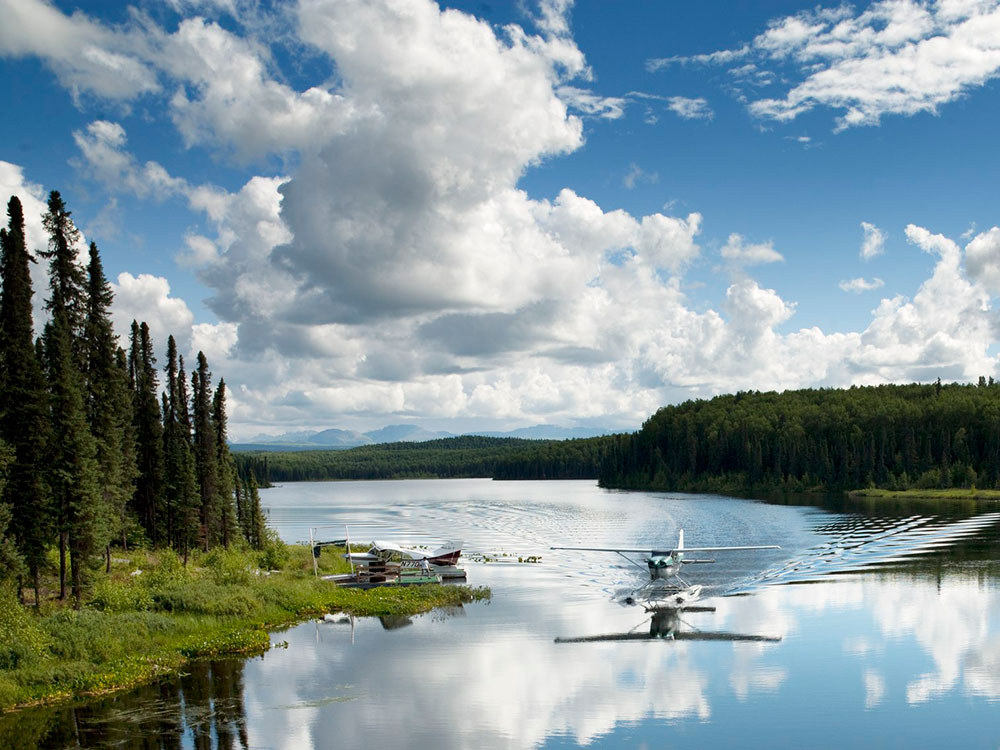
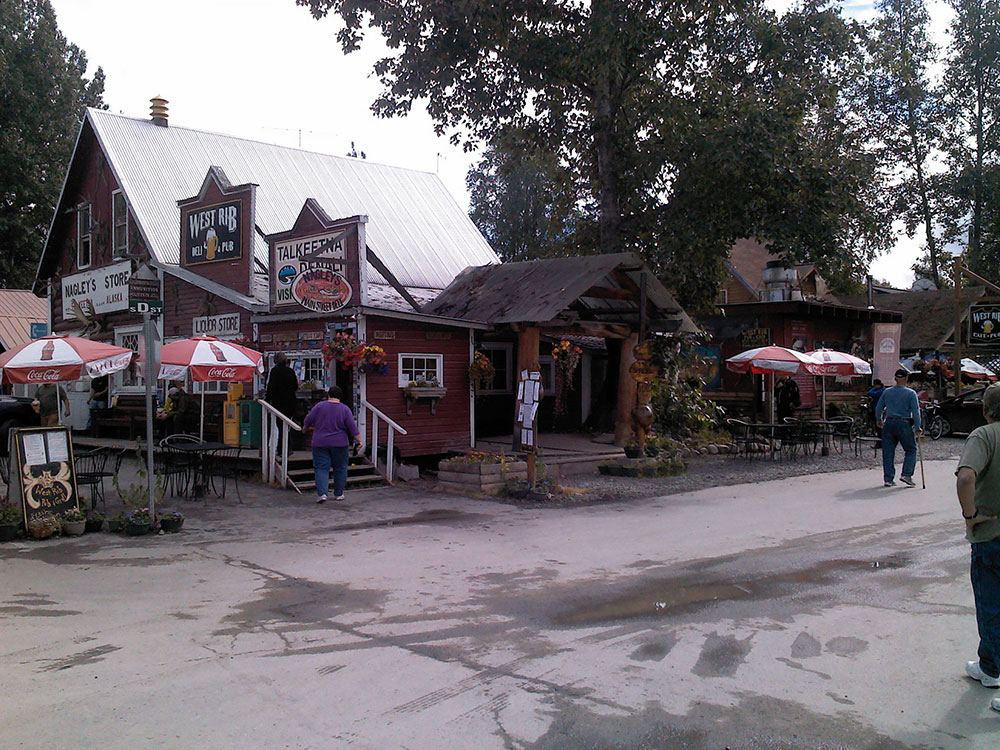
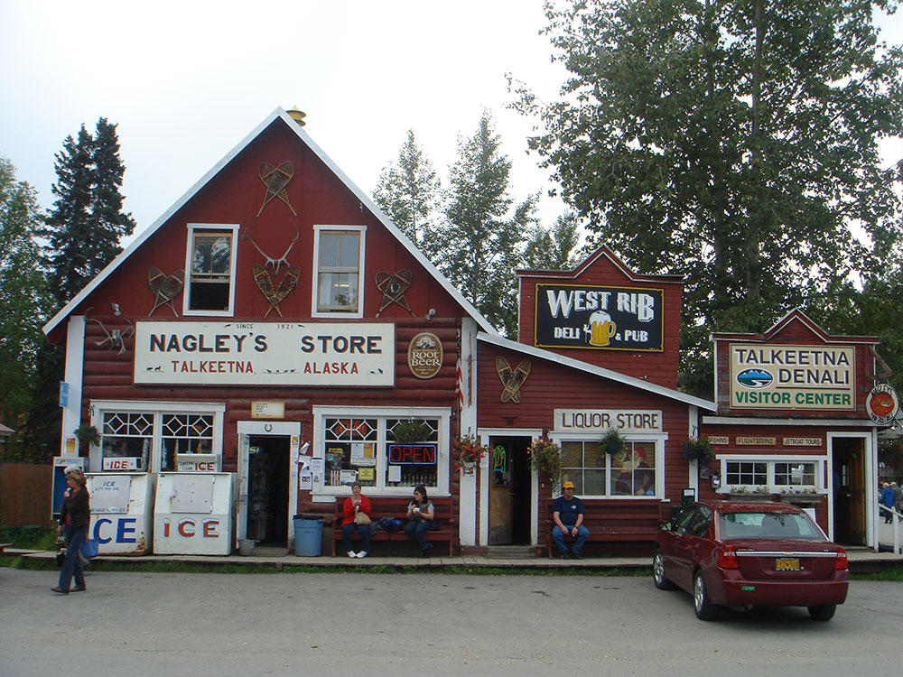

.jpg){kind=link}
Small mountain town known for its historic charm, riverside setting, and stunning views of the surrounding wilderness with access to outdoor adventures and flightseeing.
General Information
Tours, activities, and attractions have individual pricing
How to Get There
From Anchorage (115 mi): Take Parks Hwy (AK-3 N) to Talkeetna Spur Rd, then follow it west for about 14 miles into the town center.
Overview
Talkeetna is a small, quirky town at the confluence of the Talkeetna, Susitna, and Chulitna Rivers, about 100 miles north of Anchorage, and it is the main base for climbers attempting Denali, the highest peak in North America at 20,310 feet. Its unpaved streets, log cabins, and roadhouses give it a frontier feel, and on a clear day the mountain dominates the horizon. It is also a popular stop for flightseeing, with planes that land on glaciers on Denali's flanks.
Visitors come to Talkeetna for flightseeing tours of Denali, for the historic downtown with its shops, galleries, and pubs, and for the Talkeetna Roadhouse, famous for its cinnamon rolls. They also come for river rafting and jet boat tours, for the Moose Dropping Festival, and for the views from Talkeetna Riverfront Park.
History
The Dena'ina and Ahtna peoples lived in the area, and gold prospectors arrived in the early 1900s, and the town was established in 1916 as a railroad station when the Alaska Railroad selected the site as a construction headquarters. Talkeetna grew as a base for homesteaders and miners, and from the 1950s it was the base for mountaineering expeditions to Denali. A town cat named Stubbs was the honorary mayor for 20 years until 2017. The town has held on to its small, independent character, and the Talkeetna Historic District has been recognized for its log buildings.
Sightseeing and Popular Landmarks
Main Street has historic log buildings, such as the Fairview Inn, Nagley's Store, and the Talkeetna Roadhouse, which has hosted mountaineers since 1944, and the Talkeetna Historical Society Museum shows the area's history and mountaineering. Talkeetna Riverfront Park at the end of Main Street has views of Denali and the rivers, and the Denali Brewpub and other local pubs are popular. The Talkeetna Spur Road ends at the village.
Culture and Museums
The Talkeetna Historical Society Museum has exhibits on gold mining, railroad history, and the history of Denali climbs, with a scale model of the mountain. The Talkeetna Ranger Station of Denali National Park is where climbers register, and the Denali Climbers Memorial honors those who died on the mountain. The Moose Dropping Festival in July and the Talkeetna Bluegrass Festival and the Winter Carnival are popular events.
Parks
Denali State Park, just north, has views of Denali from the Parks Highway, with trails and camping at the Byers Lake and the Kesugi Ridge Trail. Denali National Park lies 100 miles to the north, and the Susitna River is popular for fishing, rafting, and jet boat tours. Flightseeing tours over Denali, with glacier landings on the Ruth Glacier and other places, are the highlight of a visit.
Seasons and Weather
Talkeetna has a subarctic climate. Summers are mild, with highs in the 60s and 70s°F and long daylight, and winters are cold, with highs in the teens and 20s°F and about 100 inches of snow. Climbing season on Denali runs from May to July, and Denali is often hidden by clouds, so clear days are treasured.
Things to Do
Visit One of Alaska's Most Charming Mountain Towns
Talkeetna is a historic community located at the confluence of the Susitna, Chulitna, and Talkeetna Rivers. Known for its colorful downtown, aviation heritage, spectacular mountain views, and role as a staging point for Denali climbing expeditions, Talkeetna is one of Alaska's most popular destinations for outdoor adventure and small-town charm.
View Denali and the Alaska Range
On clear days, Talkeetna offers some of the best views of Denali outside the national park. The town's location provides sweeping vistas of the Alaska Range, and many visitors come specifically to photograph North America's tallest peak.
Take a Flightseeing Tour
Talkeetna is world-famous for flightseeing excursions over Denali National Park and the Alaska Range. Scenic flights allow visitors to view glaciers, deep valleys, towering peaks, and the immense scale of Denali from the air. Some tours also include glacier landings.
Explore Historic Downtown Talkeetna
The compact downtown district features locally owned shops, galleries, restaurants, historic buildings, and cultural attractions. Visitors can stroll the streets, browse local artwork, learn about the town's history, and experience the unique atmosphere that has made Talkeetna a popular destination for travelers.
Learn About Denali Mountaineering
Talkeetna serves as the primary base for climbers attempting to summit Denali. Visitors can stop at the ranger station and local museums to learn about mountaineering history, climbing expeditions, and the challenges of ascending North America's highest peak.
Enjoy River Adventures
The Susitna, Talkeetna, and Chulitna Rivers provide opportunities for jet boat tours, fishing, rafting, wildlife viewing, and scenic excursions. These waterways offer excellent access to the surrounding wilderness and some of the best scenery in the region.
Experience Alaska's Arts and Culture Scene
Talkeetna has developed a reputation as an artistic and creative community. Galleries, events, local crafts, live music, and cultural festivals contribute to the town's vibrant atmosphere throughout the summer season.
Top Trails
Talkeetna Lakes Trail System
Length: More than 6 miles of interconnected trails
Elevation Gain: Minimal
Difficulty: Easy
This popular trail network winds through forests, wetlands, and lakes near town. Visitors enjoy hiking, biking, birdwatching, photography, and opportunities to experience Alaska's boreal forest environment.
Talkeetna Riverfront Trail
Length: Approximately 2 miles round trip
Elevation Gain: Minimal
Difficulty: Easy
This scenic trail follows the riverfront and leads to viewpoints overlooking the confluence of the Talkeetna, Susitna, and Chulitna Rivers. It provides excellent opportunities for photography and Denali viewing during clear weather.
Curry Ridge Trail
Length: Approximately 6 miles round trip
Elevation Gain: Significant
Difficulty: Moderate to Strenuous
Located nearby in Denali State Park, Curry Ridge Trail climbs above tree line and rewards hikers with panoramic views of the Alaska Range, Susitna Valley, and surrounding wilderness landscapes.
Byers Lake Trail
Length: Approximately 4.5 miles loop
Elevation Gain: Minimal
Difficulty: Easy
Also located in nearby Denali State Park, this scenic lakeside trail circles Byers Lake and offers excellent views of forests, mountains, wildlife habitat, and occasional views toward Denali.
This article uses material from Wikipedia as well as information from official tourism and institutional sources. Key references include Talkeetna Chamber of Commerce, National Park Service Denali National Park and Preserve, Talkeetna Historical Society, Travel Alaska, and National Weather Service Anchorage. Wikipedia material is from the article "Talkeetna, Alaska", and is available under the Creative Commons Attribution-Share-Alike License 3.0.
Featured Locations and Trails
-400.jpg)
Jon Konrath from Oakland, USA, CC BY 2.0, via Wikimedia Commons; Image Size Adjusted
.jpg){kind=link}
Talkeetna Riverfront Park
Riverside park featuring scenic views, walking paths, fishing access, open green spaces, and opportunities to experience the natural beauty of one of Alaska's most historic communities.
Jon Konrath from Oakland, USA, CC BY 2.0, via Wikimedia Commons; Image Size Adjusted
Talkeetna Roadhouse
Historic lodge and restaurant offering hearty home-style meals, shared lodging, and a rustic atmosphere reflecting early road travel and frontier hospitality.



